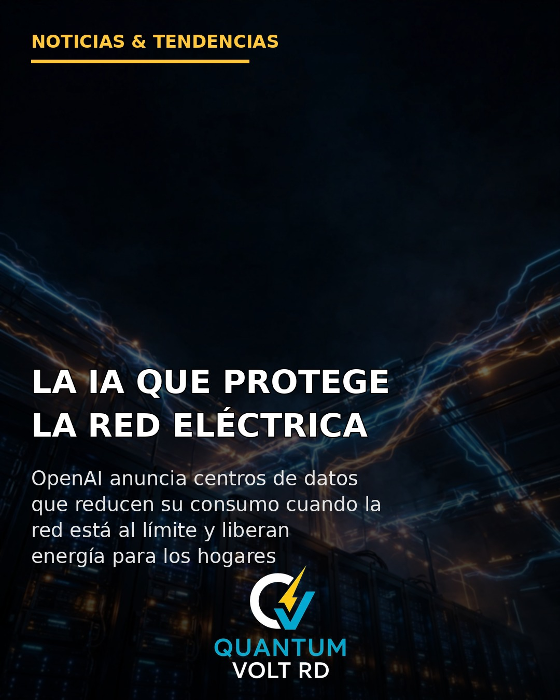

Noticia · 6 de noviembre de 2026
OpenAI lanzó Grid Protectors: sus centros de datos liberarán energía para los hogares
6 de noviembre de 2026 · Energía e inteligencia artificial · OpenAI

OpenAI lanzó el 2 de noviembre de 2026 su programa "Grid Protectors": sus futuros centros de datos reducirán su consumo eléctrico cuando la red esté sobrecargada y liberarán energía para los hogares cuando sea necesario. El piloto será el campus de Effingham, Georgia, que podrá ofrecer hasta 1.000 MW de respuesta flexible de la demanda, el equivalente al consumo promedio de unos 700.000 hogares.
La IA que ayuda a la red en vez de presionarla
Es un giro importante: la IA, que hoy es una de las mayores consumidoras de electricidad, empieza a diseñarse para ayudar a la red en vez de presionarla. Los centros también colaborarán con los operadores de red con generación o almacenamiento in situ —baterías y controles de energía— para suavizar las fluctuaciones de la demanda. El contexto es de crecimiento acelerado: la capacidad de centros de datos en Estados Unidos superaría los 100 GW para 2030, y OpenAI se comprometió a pagar todos los costos de infraestructura y servicio eléctrico de sus campus.
Qué significa para tu casa o negocio
En Quantum Volt RD aplicamos esa misma idea a tu casa: sistemas solares con baterías y gestión inteligente para que uses tu energía cuando más la necesitas, incluso cuando la red falla o está al límite.
Cotiza tu sistema solar con baterías por WhatsApp: 829-778-9089Fuentes
- Infobae (3 de noviembre de 2026): OpenAI lanza un programa para que sus centros de datos ayuden a aliviar la red eléctrica y liberen energía para hogares
← Volver a la página principal de Quantum Volt RD · Ver todas las noticias →